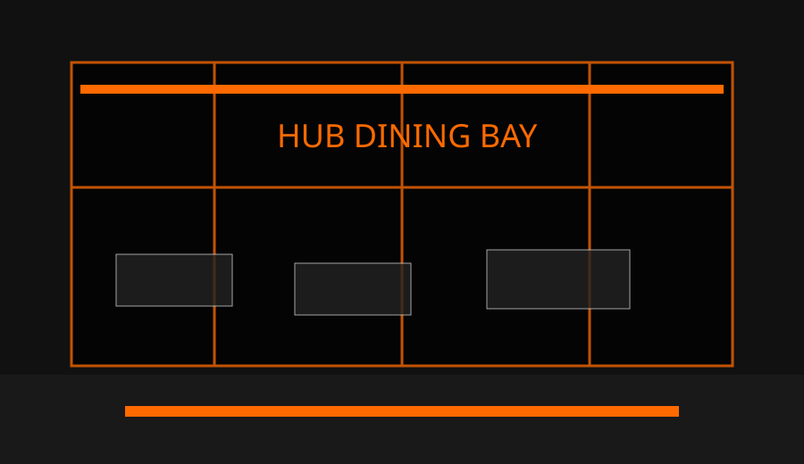

Menu Sincronizzato
Ogni modifica del menu admin diventa immediatamente visibile ai clienti tramite il database simulato condiviso.
Produzione alimentare ad alta efficienza per pionieri, ingegneri e team logistici. Prenota un modulo tavolo, invia ordini e monitora ogni richiesta dal terminale admin condiviso.
Prenota tavolo Avvia ordineOgni modifica del menu admin diventa immediatamente visibile ai clienti tramite il database simulato condiviso.
Planimetria interattiva quattro per quattro con stati libero, occupato, prenotato e selezionato.
Dashboard con statistiche reali, ordini attivi, recensioni e prenotazioni senza ricaricare la pagina.
